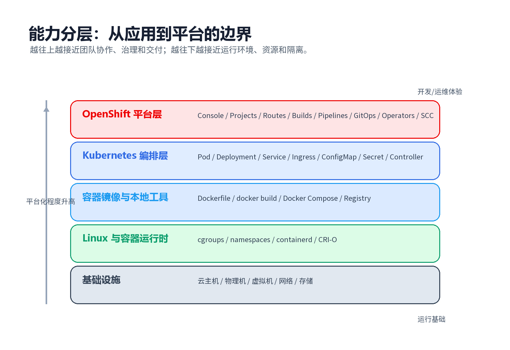
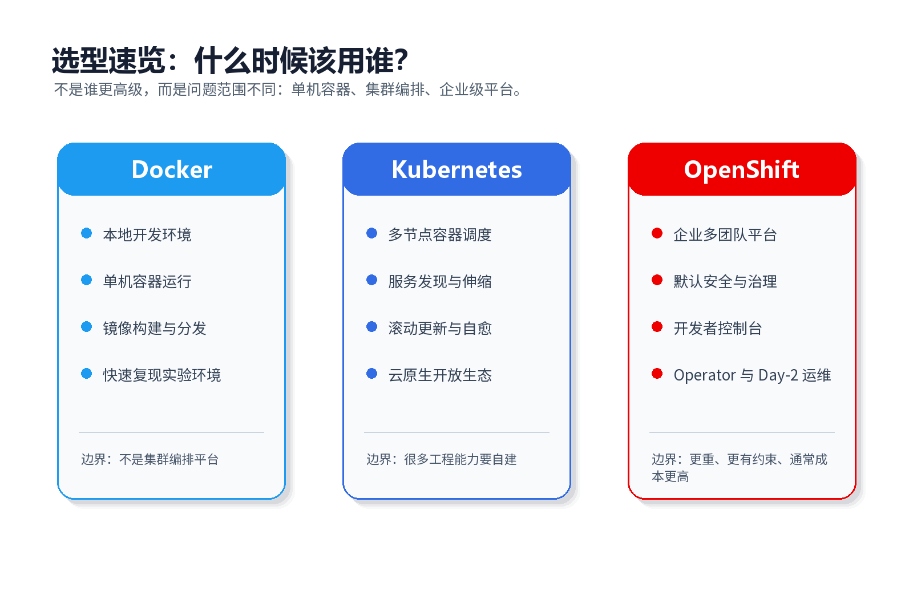
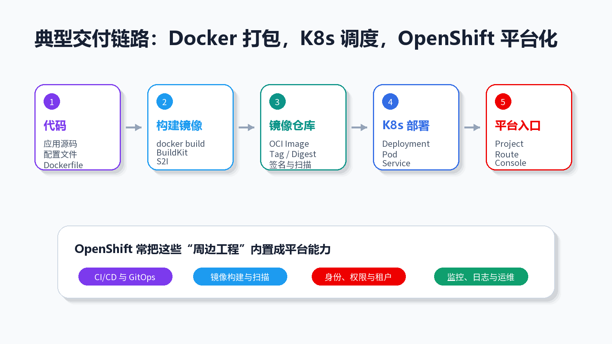

Docker, Kubernetes, and OpenShift: Relationship, Features, and Differences
Docker, Kubernetes, and OpenShift are often mentioned together, but they do not solve the same problem. Docker focuses on packaging and running containers, Kubernetes focuses on orchestrating containers across a cluster, and OpenShift turns Kubernetes into a more opinionated enterprise platform.
 Cover: Docker, Kubernetes, and OpenShift
Cover: Docker, Kubernetes, and OpenShift
The short version:
| Tool | Positioning | Main problem it solves |
|---|---|---|
| Docker | Container toolchain | Package an application and its dependencies into an image, then run it as a container |
| Kubernetes / K8s | Container orchestration platform | Schedule, scale, expose, update, and self-heal containerized workloads across nodes |
| OpenShift | Enterprise Kubernetes platform | Provide Kubernetes with stronger defaults for teams, security, governance, delivery, and operations |
1. Relationship: not a replacement chain, but layered responsibilities
The common statement “Kubernetes replaced Docker” is too vague.
A more accurate model is:
- Docker helps developers build images, run containers, and manage local development environments.
- Kubernetes does not require Docker as the image builder. It cares about desired state: which Pods should run, how many replicas exist, what configuration they use, and how services are exposed.
- OpenShift is built on Kubernetes and adds enterprise platform capabilities such as a web console, project isolation, Routes, builds, Operators, identity integration, security constraints, and operational tooling.
 Layered relationship between Docker, Kubernetes, and OpenShift
Layered relationship between Docker, Kubernetes, and OpenShift
Two details matter:
- Kubernetes is not Docker: Kubernetes uses the Container Runtime Interface to talk to runtimes such as
containerdandCRI-O. Older Kubernetes releases included a direct Docker Engine integration through dockershim, but dockershim was removed starting with Kubernetes v1.24. - OpenShift is not a separate replacement for Kubernetes: OpenShift remains Kubernetes. Core resources such as Pod, Deployment, Service, ConfigMap, Secret, and Namespace are still Kubernetes resources.

Capability layers from infrastructure to OpenShift2. Docker: standardizing how applications run
Docker’s core value is standardizing the runtime environment of an application.
Without containers, deployment often depends on whether the target machine has the correct Java, Python, Node.js, shared libraries, configuration files, and environment variables. Docker packages the application, runtime, dependencies, and startup command into an image. That image can then be used to start containers consistently across environments.
| Concept | Role | Mental model |
|---|---|---|
| Dockerfile | Describes how to build an image | Environment assembly instructions |
| Image | Read-only package containing files, dependencies, and configuration | Application artifact |
| Container | Running instance of an image | The actual isolated process environment |
| Registry | Stores and distributes images | Artifact repository for container images |
| Docker Compose | Defines multi-container local environments | Local development orchestration |
Example:
|
|
Docker is especially strong at:
- making environments reproducible;
- standardizing application delivery through images;
- starting containers quickly with low overhead;
- improving local development with Docker Desktop, CLI, and Compose;
- using a mature image ecosystem.
Its boundary is also clear: Docker is excellent for building and running containers, but it is not a full production cluster platform. Once you need multi-node scheduling, automatic recovery, rolling updates, service discovery, storage orchestration, and platform governance, you need something like Kubernetes.
3. Kubernetes: keeping containerized workloads in the desired state
Kubernetes is a container orchestration platform. Its core idea is declarative APIs plus control loops.
You describe the desired state: “run three replicas of this service using this image and expose this port.” Kubernetes continuously compares actual state with desired state. If one Pod disappears, it creates another. If a node fails, workloads can be rescheduled. If you update the image, Kubernetes can roll the change out gradually.
Key Kubernetes objects:
| Object | Role |
|---|---|
| Cluster | A group of machines running Kubernetes |
| Node | Worker machine in the cluster |
| Pod | Smallest deployable unit in Kubernetes |
| Deployment | Declares replicas, image version, and update strategy for stateless workloads |
| Service | Provides stable access and service discovery for a set of Pods |
| Ingress | Manages HTTP/HTTPS entry traffic |
| ConfigMap | Stores non-sensitive configuration |
| Secret | Stores sensitive data such as tokens and certificates |
| Namespace | Provides naming and resource isolation |
Minimal Deployment example:
|
|
Kubernetes provides scheduling, self-healing, horizontal scaling, rolling updates, service discovery, configuration management, and a very large open ecosystem.
Its boundary: Kubernetes is powerful, but a bare cluster is not automatically a complete enterprise platform. You usually still need to integrate a registry, CI/CD, GitOps, identity, monitoring, logging, ingress, certificates, backup, upgrade workflows, network policy, and security controls.
4. OpenShift: productizing Kubernetes for enterprises
OpenShift is Red Hat’s Kubernetes platform. It does not reinvent orchestration; it builds on Kubernetes and adds stronger defaults and platform capabilities.
If Kubernetes is the platform kernel, OpenShift packages that kernel with console, authentication, routing, project management, builds, pipelines, Operators, security constraints, lifecycle management, and operational experience.
| Capability | In plain Kubernetes | In OpenShift |
|---|---|---|
| Web console | Optional and not the central default experience | Provides developer and administrator consoles |
| Project isolation | Namespace is the base primitive | Project wraps namespace usage for teams |
| Application entry | Ingress requires controller selection | Route is a common OpenShift entry model |
| Identity | Extensible, usually integrated separately | Commonly integrated with enterprise identity systems |
| Security | RBAC, admission, PSA, network policy, and more | Stronger default constraints and platform policies |
| Image build | Kubernetes itself does not build images | Often includes or integrates build workflows |
| Operators | Available in Kubernetes ecosystem | Deeply used to manage platform components |
| Lifecycle operations | Designed by the platform team | More productized install, upgrade, and day-2 operations |
OpenShift is strong when an organization needs:
- a more complete out-of-the-box platform;
- stricter security defaults;
- multi-team platform governance;
- enterprise support and lifecycle management;
- hybrid cloud and private deployment consistency.
The tradeoff is weight. OpenShift has a larger learning surface, more platform components, stricter defaults, and usually higher operational and subscription costs.
5. Key differences

Decision guide for Docker, Kubernetes, and OpenShift| Dimension | Docker | Kubernetes | OpenShift |
|---|---|---|---|
| Primary role | Container toolchain | Container orchestration | Enterprise Kubernetes platform |
| Scope | Single host, image build, local dev | Multi-node workload management | Kubernetes plus platform governance |
| Smallest unit | Container | Pod | Pod |
| Configuration | Dockerfile, Compose, CLI | YAML, kubectl, API | YAML, oc CLI, Console, Operators |
| Image build | Core capability | External concern | Often built in or integrated |
| Cluster scheduling | Not the main goal | Core capability | Based on Kubernetes |
| Local development | Excellent | Possible but heavier | Usually too heavy for basic local dev |
| Production cluster | Needs other systems | Strong fit | Strong enterprise fit |
| Security governance | Basic building blocks | Rich but requires design | Stronger opinionated defaults |
| Typical users | Developers, testers | Platform engineers, SREs | Enterprise platform teams |
6. How they work together in a delivery flow
In real production systems, these tools are often combined rather than chosen as exclusive alternatives.

Typical delivery flow: Docker builds, Kubernetes schedules, OpenShift productizesA typical flow:
- Developers write code and a
Dockerfile. - Local services are tested with Docker or Docker Compose.
- CI builds an image with Docker, BuildKit, or an OpenShift build workflow.
- The image is pushed to a registry such as Harbor, Quay, Docker Hub, or GitHub Container Registry.
- Kubernetes deploys the image through Deployment, StatefulSet, Job, or similar resources.
- Service, Ingress, or OpenShift Route exposes the application.
- OpenShift adds console, identity, policy, monitoring, logging, GitOps, and operational governance.
|
|
7. Common misconceptions
“Kubernetes no longer supports Docker, so Docker is useless?”
No. Kubernetes removed the special dockershim integration with Docker Engine. It did not reject Docker-built images. If an image follows the OCI / Docker image format, Kubernetes runtimes such as containerd and CRI-O can still pull and run it.
“Can Docker Compose replace Kubernetes?”
Only in small scenarios. Compose is excellent for local development, demos, and simple single-host deployments. It is not designed to be a full multi-node platform with scheduling, self-healing, rolling updates, service discovery, multi-tenancy, and cluster security.
“Is OpenShift just Kubernetes with a UI?”
No. The UI is only one part. OpenShift also adds platform lifecycle, authentication, authorization, routing, builds, image management, security constraints, Operators, and operations workflows.
“Do I need to master Docker and Kubernetes before learning OpenShift?”
You do not need to master everything first, but the learning path is clearer if you understand containers and images, then Pods and Deployments, and then OpenShift-specific concepts such as Project, Route, SCC, Build, Operator, and Console.
8. Choosing between them
| Scenario | Recommended choice | Reason |
|---|---|---|
| Local development with databases and middleware | Docker / Docker Compose | Simple and fast |
| Small single-host deployment | Docker | Low operational cost |
| Multi-service, multi-replica production deployment | Kubernetes | Orchestration, self-healing, scaling, service discovery |
| Team already has strong K8s skills and wants openness | Kubernetes | Broad ecosystem and portability |
| Enterprise platform for many teams | OpenShift | Governance, security, console, operations, lifecycle |
| Regulated, private, hybrid-cloud deployment with vendor support | OpenShift | Stronger enterprise support and platform defaults |
| Learning container fundamentals | Docker | Build the mental model before moving to K8s |
Final summary:
- Docker is the container entry point: package and run applications consistently.
- Kubernetes is the orchestration core: keep workloads running in the desired state across a cluster.
- OpenShift is the enterprise platform layer: make Kubernetes more usable, governable, and operable for large organizations.
Remember this simple line: Docker manages containers, Kubernetes manages clusters, and OpenShift manages the platform experience around Kubernetes.